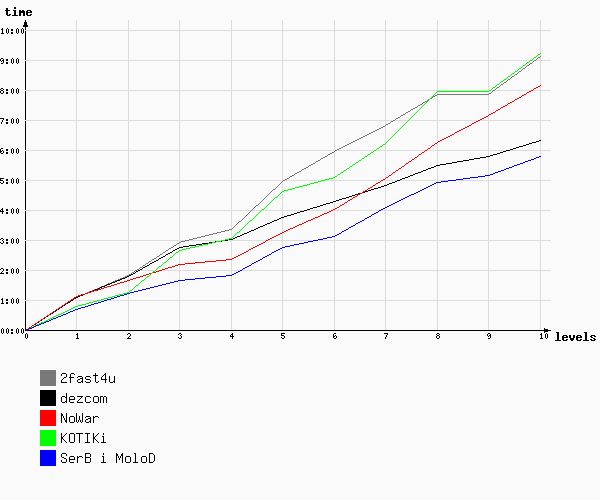

Игра №11
Тип игры: Закрытая
Описание: ВОР
Принадлежности: ВОР
| Место | Команда | Уровней пройдено | Время уровней | Всего | ||
|---|---|---|---|---|---|---|
| Активного | Штрафы | Бонусы | ||||
| 1 | СерБ и МолоД | 10 | 05:47:03 | 0 | 0 | 05:47:03 |
| 2 | dezcom | 10 | 06:20:00 | 0 | 0 | 06:20:00 |
| 3 | NoWar | 10 | 08:09:48 | 0 | 0 | 08:09:48 |
| 4 | 2fast4u | 10 | 09:07:50 | 0 | 0 | 09:07:50 |
| 5 | КОТИКи | 10 | 09:12:42 | 0 | 0 | 09:12:42 |

| 1 | 2 | 3 | 4 | 5 | 6 | 7 | 8 | 9 | 10 | ||
| 1 | СерБ и МолоД 20:40:54 | СерБ и МолоД 21:12:25 | серб и молод 21:38:56 | СерБ и МолоД 21:48:15 | СерБ и МолоД 22:44:20 | СерБ и МолоД 23:07:23 | СерБ и МолоД 00:05:34 | СерБ и МолоД 00:55:17 | СерБ и МолоД 01:09:26 | СерБ и МолоД 01:47:03 | 1 |
| 2 | КОТИКи 20:48:04 | КОТИКи 21:14:59 | nowar 22:10:17 | nowar 22:20:18 | nowar 23:15:53 | NoWar 00:00:44 | dezcom 00:48:25 | dezcom 01:28:17 | dezcom 01:47:19 | dezcom 02:20:00 | 2 |
| 3 | 2fast4u 21:05:35 | NoWar 21:38:48 | КОТИКи 22:38:45 | dezcom 23:01:15 | dezcom 23:44:25 | dezcom 00:17:29 | NoWar 01:02:50 | NoWar 02:16:02 | nowar 03:08:30 | nowar 04:09:48 | 3 |
| 4 | dezcom 21:05:39 | dezcom 21:46:08 | dezcom 22:44:32 | КОТИКи 23:02:46 | КОТИКи 00:37:15 | КОТИКи 01:05:48 | КОТИКи 02:13:37 | 2fast4u 03:51:08 | 2fast4u 03:51:17 | 2fast4u 05:07:50 | 4 |
| 5 | NoWar 21:06:43 | 2fast4u 21:48:05 | 2fast4u 22:54:40 | 2fast4u 23:21:10 | 2fast4u 00:56:36 | 2fast4u 01:57:56 | 2fast4u 02:48:35 | КОТИКи 03:56:25 | КОТИКи 03:56:42 | КОТИКи 05:12:42 | 5 |
| 1 | 2 | 3 | 4 | 5 | 6 | 7 | 8 | 9 | 10 |
Уровень 1.
| № | Команда | Старт | Завершение | Штраф | Продолжительность | Бонусы |
|---|---|---|---|---|---|---|
| 1 | СерБ и МолоД | 20:00:04 | 20:40:54 | 40:50 | ||
| 2 | КОТИКи | 20:00:17 | 20:48:04 | 47:47 | ||
| 3 | 2fast4u | 20:00:04 | 21:05:35 | 01:05:31 | ||
| 4 | dezcom | 20:00:06 | 21:05:39 | 01:05:33 | ||
| 5 | NoWar | 20:00:06 | 21:06:43 | 01:06:37 |
Задание :
Найдите ресторанный дворик торгового комплекса, который находится на станции метро, прежде носившей название имени Л. М. Кагановича.
Необходимо иметь с собой книгу Маркса и Энгельса. Она должна быть у человека с завязанным пионерским галстуком.
Агент (Агенты) сидит в гостинном дворике за столиком. Там есть минимум одно свободное место присесть. Человек с галстуком и книгой должен подойти к столику, спросить "Можно ли присесть на минутку". Агент будет не против.
Игроку необходимо присесть, показать агенту книгу, положить книгу на стол, рядом положить карточку команды. Правую руку положить на книгу, торжественно с выражением и без запинок наизусть прочитать клятву пионеров.(подглядывание в бумажку запрещается)
Агент себя не выдаст до тех пор, пока не будут соблюдены все вышенаписанные условия. (Читать действительно надо с выражением и без запинки, наизусть). Если хотя бы одно условие будет не выполнено, агент будет делать вид, что он ничего не понимает, держать вас за столиком так же не будет. Внимательно продиктуйте все условия

http://klinsman.narod.ru/art/raritets/pion.htm
Агентов 3-е. Одна из них в голубом пиджаке.
Уровень 2.
| № | Команда | Старт | Завершение | Штраф | Продолжительность | Бонусы |
|---|---|---|---|---|---|---|
| 1 | КОТИКи | 20:48:04 | 21:14:59 | 26:55 | ||
| 2 | СерБ и МолоД | 20:40:54 | 21:12:25 | 31:31 | ||
| 3 | NoWar | 21:06:43 | 21:38:48 | 32:05 | ||
| 4 | dezcom | 21:05:39 | 21:46:08 | 40:29 | ||
| 5 | 2fast4u | 21:05:35 | 21:48:05 | 42:30 |
Задание Поле: :
Вам необходимо собрать 10 разных печатных изданий газет и/или журналов с датой выхода не позднее 30.09.05(издания считаются разными, если у них не совпадают даты)
Макулатуру необходимо привезти к центральному входу Зоопарка на Баррикадной.
На этом уровне подсказок для поля не будет.
Задание Координаторский: :
Назовите этого человека:
Ответ: сх + фамилия (на русском).
Самый известный революционер своей страны.
Уровень 3.
| № | Команда | Старт | Завершение | Штраф | Продолжительность | Бонусы |
|---|---|---|---|---|---|---|
| 1 | серб и молод | 21:12:25 | 21:38:56 | 26:31 | ||
| 2 | nowar | 21:38:48 | 22:10:17 | 31:29 | ||
| 3 | dezcom | 21:46:08 | 22:44:32 | 58:24 | ||
| 4 | 2fast4u | 21:48:05 | 22:54:40 | 01:06:35 | ||
| 5 | КОТИКи | 21:14:59 | 22:38:45 | 01:23:46 |
Задание :
Вот этот вот великий человек, подскажет вам, на каком причале находится ключ.
Уточнит место мост, который был построен на месте предыдущего моста, который, в свою очередь, был построен в 1873 году.
Уровень 4.
| № | Команда | Старт | Завершение | Штраф | Продолжительность | Бонусы |
|---|---|---|---|---|---|---|
| 1 | СерБ и МолоД | 21:38:56 | 21:48:15 | 09:19 | ||
| 2 | nowar | 22:10:17 | 22:20:18 | 10:01 | ||
| 3 | dezcom | 22:44:32 | 23:01:15 | 16:43 | ||
| 4 | КОТИКи | 22:38:45 | 23:02:46 | 24:01 | ||
| 5 | 2fast4u | 22:54:40 | 23:21:10 | 26:30 |
Задание :
Ключ состоит из 3 слов.
1-е: Последнее слово на 8-ой странице(в правом нижнем углу) вчерашней (пятница) газеты "Советский Спорт".
2-е и 3-е: 2 последних слова на 2-ой странице сегодняшней (суббота) газеты "Спорт-Экспресс".
На этот уровень подсказок не будет.
Формат ответа: сх + 1-е слово + 2-е + 3-е.
Уровень 5.
| № | Команда | Старт | Завершение | Штраф | Продолжительность | Бонусы |
|---|---|---|---|---|---|---|
| 1 | dezcom | 23:01:15 | 23:44:25 | 43:10 | ||
| 2 | nowar | 22:20:18 | 23:15:53 | 55:35 | ||
| 3 | СерБ и МолоД | 21:48:15 | 22:44:20 | 56:05 | ||
| 4 | КОТИКи | 23:02:46 | 00:37:15 | 01:34:29 | ||
| 5 | 2fast4u | 23:21:10 | 00:56:36 | 01:35:26 |
Задание :
Ключи вы сможете найти на слободах и слабодке.
На одной из улиц, на 11-ом доме вы найдете табличку. 1-ая часть ключа :4 первых символа слова, которое находится под "Медтехника" на даннной табличке.
Вторая часть ключа :4 последних символа из названия "Салона Парикмахерской"
Ответ: сх + часть с 11-го дома + часть с салона.
Уровень 6.
| № | Команда | Старт | Завершение | Штраф | Продолжительность | Бонусы |
|---|---|---|---|---|---|---|
| 1 | СерБ и МолоД | 22:44:20 | 23:07:23 | 23:03 | ||
| 2 | КОТИКи | 00:37:15 | 01:05:48 | 28:33 | ||
| 3 | dezcom | 23:44:25 | 00:17:29 | 33:04 | ||
| 4 | NoWar | 23:15:53 | 00:00:44 | 44:51 | ||
| 5 | 2fast4u | 00:56:36 | 01:57:56 | 01:01:20 |
Задание Поле: :
Воробьевы горы.
Между ул. Косыгина и Воробьевской набережной, около Комсомольского проспекта со стороны Лужников вы найдете полуразрушенное сооружение.
На нижнем его уровне вы найдете ключ.
Задание Координаторский: :
Как звали мальчика, подопечного Тимура, который получил крапивой от испуганной бабки, у которой пропала коза.
Ответ : Имя + Фамилия (как в источнике)
Уровень 7.
| № | Команда | Старт | Завершение | Штраф | Продолжительность | Бонусы |
|---|---|---|---|---|---|---|
| 1 | dezcom | 00:17:29 | 00:48:25 | 30:56 | ||
| 2 | 2fast4u | 01:57:56 | 02:48:35 | 50:39 | ||
| 3 | СерБ и МолоД | 23:07:23 | 00:05:34 | 58:11 | ||
| 4 | NoWar | 00:00:44 | 01:02:50 | 01:02:06 | ||
| 5 | КОТИКи | 01:05:48 | 02:13:37 | 01:07:49 |
Задание :
Этот памятник можно описать 3-мя композициями:
1. Женщина с поднятыми вверх руками. У её ног лежит мужчина, видимо мертвый.
2. 2 бойца с винтовками и один с флагом.
3. Мужчины и женщина стягивают с лошади другого мужчину.
Напротив этого памятника, можно найти двухглазового "циклопа" из игры "Heroes of Might and Magic", который целится в лошадь. Он стоит возле стены. То чего не хватает на этой стене и будет первой частью ключа (автора не считать).
Вторую часть ключа можно найти недалеко от циклопа, вокруг "обелиска". На одном из мест, где должен был быть фанарный столб.
Формат ответа: сх + символы около "циклопа" + надпись около обелиска.
Уровень 8.
| № | Команда | Старт | Завершение | Штраф | Продолжительность | Бонусы |
|---|---|---|---|---|---|---|
| 1 | dezcom | 00:48:25 | 01:28:17 | 39:52 | ||
| 2 | СерБ и МолоД | 00:05:34 | 00:55:17 | 49:43 | ||
| 3 | 2fast4u | 02:48:35 | 03:51:08 | 01:02:33 | ||
| 4 | NoWar | 01:02:50 | 02:16:02 | 01:13:12 | ||
| 5 | КОТИКи | 02:13:37 | 03:56:25 | 01:42:48 |
Задание Поле: :
3 памятника Ленина были сооружены к пятидесятилетию октябрьской революции.
Около 2-ух из них(которые находятся дальше от центра), на деревьях вы найдете 2 части ключа.
Формат ответа: сх.... + сх....
сх52рк8сх17арк
сх17арк52рк8
сх52рк817арк
Задание Координаторский: :
В какой стране был добыт материал из которого сделан постамент для 3-го памятника. (В центре).
Формат ответа: сх + страна
Уровень 9.
| № | Команда | Старт | Завершение | Штраф | Продолжительность | Бонусы |
|---|---|---|---|---|---|---|
| 1 | 2fast4u | 03:51:08 | 03:51:17 | 00:09 | ||
| 2 | КОТИКи | 03:56:25 | 03:56:42 | 00:17 | ||
| 3 | СерБ и МолоД | 00:55:17 | 01:09:26 | 14:09 | ||
| 4 | dezcom | 01:28:17 | 01:47:19 | 19:02 | ||
| 5 | nowar | 02:16:02 | 03:08:30 | 52:28 |
Задание :
Уровень снимается в связи с тем, что активность игроков вызвала большое раздражение охраны. В парк, который открыт круглосуточно, охрана не пускает :(((.
ключ: схщр-23
На месте, где 19 октября 1923 года проходила сельскохозяйственная выставка, которую посетил в этот же день дедушка Ленин, стоит Град. Вход в него – крепость, которую охраняет дракон. Ключ можно найти на первой строчке на коробке с боку крепости.
схщр23
Уровень 10.
| № | Команда | Старт | Завершение | Штраф | Продолжительность | Бонусы |
|---|---|---|---|---|---|---|
| 1 | dezcom | 01:47:19 | 02:20:00 | 32:41 | ||
| 2 | СерБ и МолоД | 01:09:26 | 01:47:03 | 37:37 | ||
| 3 | nowar | 03:08:30 | 04:09:48 | 01:01:18 | ||
| 4 | КОТИКи | 03:56:42 | 05:12:42 | 01:16:00 | ||
| 5 | 2fast4u | 03:51:17 | 05:07:50 | 01:16:33 |
Задание :
Ключи вы найдете на 6-ти лучах, на каждом по 2 символа. Это "Солнце" находится на месте, где 21 июня и 19 августа 1918 Ленин выступал на митингах трудящихся.
1-ый луч: ищите ключ на урне (снаружи).
2-ой луч: первых 2 буквы заведения, которое находится между 2-ым и 3-им лучем. Ближе к центру солнца.
3-ий луч: На лавочке.
4-ый луч: Последние 2 буквы(не символа) футбольного аттракциона.
5-ый луч: На столбе.
6-ой луч: На лампе (фонаре).
Формат ответа: сх + 2 символа с 1-ого луча + 2 со второго +...+ с 6-го.